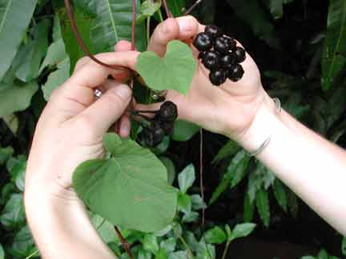

|
ECONOMICALLY
IMPORTANT PLANTS OF INDIA |
| Under-utilized Food and Fodder species and their wild relatives | Contributed by Ms.M.L Annapurna And Dr. Dhanapal, UAS, Bangalore |
Merremia
umbellata
(L.)
Hall.f.
----- Taxonomic Details

----- Correct Name
----- Classification
----- Synonyms
----- Common Names
Other Biological Details
----- Habit and Habitat
----- Diagnostic Features
----- Reproductive Biology
---------- Breeding System
---------- Phenology
---------- Pollinators
---------- Seed Biology
----------Seed Germination
------ Cultivation
----- Major Pests and Diseases
Economic Potential and Uses
----- Parts Used
----- Uses
----- Harvesting Practices
----- Produce and Products
----- Chemistry
----- Processing Techniques
----- Other uses
----- Economic Potential to the Country
----- Export Potential
Miscellaneous Information
Literature
HABIT & HABITAT:
Habitat:
Deciduous forest, Dense forest, Gardens, Herb, Hills, Moist deciduous
forest, Open Areas, Plains, Potato fields, Ravines, Rice fields, Semi evergreen
forest, Sugar cane fields, Sweet Potato fields, Tea gardens and Wheat fields.
Biotic
Zone:
Deccan, Eastern ghats, Kanara, Khasia hills, Konkan, Konkan plain,
Tropics, West Coast and Western Ghats.
Availability :
Misc:
All districts, Ambeghat, Arabbithittu, Banjarimalai, Charmadi
ghats, Bhairy pathar, Budsari hilly area, Near Margao, Camp Shed Surrounding,
Chambakkavu, Dukanwad, Ghotge, Girachi, Kambakam hills, Kanjirakadavu, Nilambur,
Kerude, Khanale, Kotigehar on the way to Kalhattigiri, Mahaballeshwar, Mhasla,
N. circar hills, Naradave, New falls, Ordofond, Patiem, Phondaghat, Poochapara,
Pulas, Sangwe, Shuntiguthi, Supa Forests, Tolpetty and Vaithamalai.
Zone:
Central, North East, South and West zone.
State:
Andhra Pradesh, Arunachal Pradesh, Assam, Goa Daman Diu, Karnataka,
Kerala, Madhya Pradesh, Maharashtra, Manipur, Meghalaya, Nagaland, Tamil Nadu
and Tripura.District:
Belgaum, Cannanore, Chengalpattu, Chikmaglore, Chingleput,
Coimbatore, Dakshin Kannada, Goa,godavari, Hassan, Kodagu, Madurai, Malappuram,
Nilgiri, Palaghat, Pune, Raigad, Raigarh, Salem, Satara, Shimoga,
Sindhudurg, Tiruchi, Tirunelveli, Trichurapalli and Uttar Kannada.
Taluk:
Canacona, Kankavli, Kudal, Palghat, Sanguem, Sawantwadi,Tenkasi and
Wadgaon.
Latitude:
0-18,
Longitude:
0-73,
Altitude: 0-1300,
Rainfall: 0-2070,
Status :
Phenology :
The flowering
occurs during the months of December
- February and in some places the flowering will commences from
February and it extends up to May.
Pollinators:
Seed Biology :
Seed Germination:
MAJOR PESTS & DISEASES
Cultivation:
Pests:
Diseases:
Economic
Potential and Uses
Parts used:
Leaves,seeds.
1. The young leaves are eaten as pot-herb.
Harvesting
Practices
Produce and Products
1. The plant is considered useful in Indonesis for fistulae.pustules and tumours.
2. A poultice of the leaves is used as an external application for burns, scalds and sores.
3. The seeds contain alternative in cutaneous
diseases.
Flora of Cannanore,Ramachandran V.S. and Nair V. J,1988,Library,Atree,Bangalore.
The Flora Of Nilambur,Sivarajan V.V. and Phillip Mathew,1997,FSL,Bangalore..